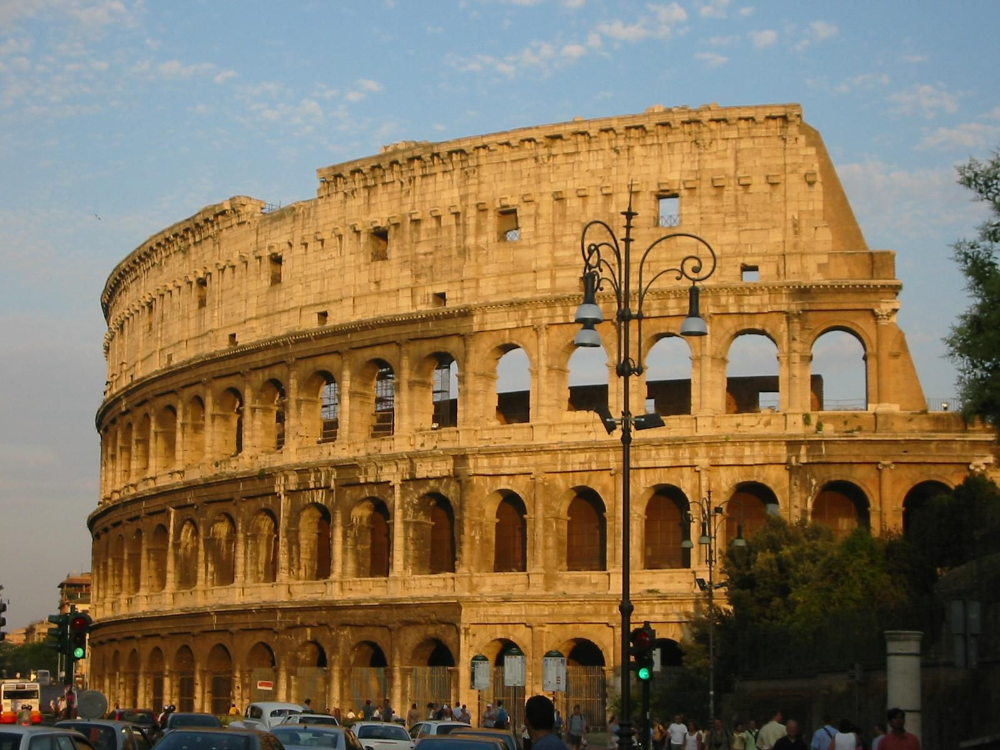
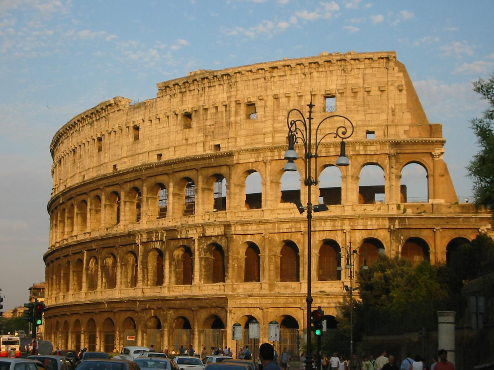

В тази страница ще видим интересни места,които ще ви привлекат окото
 

Колизеумът е най-големият амфитеатър в света, с което привлича и впечатлява милиони посетители всяка година. Освен в сърцата на многобройни туристи, този легендарен символ на Рим е намерил място и сред Седемте чудеса на света. Построен преди близо 2000 години,този Колизеумът е бил сцена на гладиаторски битки, епични спектакли, циркови представления и много други зрелища, които вълнуват въображението на хората дори и днес. Наричан Амфитеатър на Флавиите или също Амфитеатър на Цезарите Колизеят е построен от Флавиите в началото на I век като подарък към римските граждани, почти на мястото на предишната резиденция на Нерон. Той се издига в Рим, близо до двореца на Нерон ,който е построен след опожаряването на Рим през 64 г. Името Колосео му е било дадено към VIII век заради намиращия се до него Колос на Нерон.Тази статуя е реконструирана по-късно от наследниците на Нерон и е превърната в статуя на Сол – бога на Слънцето,като е добавена подходяща слънчева корона. След това е съборена, за да бъде използван бронзът, от който е направена, като е запазен само нейният постамент.
Ако искате допълнително информация за Колизеиума,кликнете тук